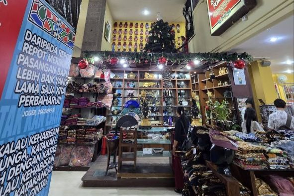

Joger Bali, yang dikenal sebagai “Pabrik Kata-Kata”, merupakan salah satu toko oleh-oleh paling populer di Pulau Bali. Tempat ini menjadi destinasi wajib bagi wisatawan, termasuk peserta Kuliah Kerja Lapangan (KKL), untuk mengenal kreativitas dan humor khas masyarakat Bali. Di sini, pengunjung dapat menemukan berbagai produk seperti kaos, sandal, tas, dan souvenir unik yang penuh dengan kata-kata lucu dan menghibur.
Selama kunjungan ke Joger, peserta KKL dapat menikmati berbagai aktivitas menarik, seperti:
• Berbelanja aneka oleh-oleh dan produk khas Joger.
• Mengamati kreativitas desain dan konsep pemasaran unik Joger.
• Mengambil foto di area toko dengan dekorasi yang menarik.
• Menikmati suasana santai di area sekitar toko yang nyaman.
Beberapa hal yang menjadikan Joger istimewa antara lain:
Kreativitas Tinggi: Dikenal dengan desain kaos dan tulisan lucu yang khas.
Produk Berkualitas: Mengutamakan bahan dan hasil produksi lokal.
Destinasi Edukatif: Memberikan wawasan tentang kreativitas dan strategi branding lokal.
Lokasi Strategis: Terletak di daerah Kuta, mudah dijangkau dari berbagai destinasi wisata.